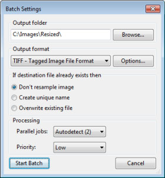

Procesamiento por Lotes
Con esta característica es posible redimensionar múltiples imágenes al mismo tiempo. Podrás aplicar los mismos ajustes a todas las imágenes, o usar diferentes ajustes para diferentes imágenes o grupos de imágenes. Elige lo que prefieras y PhotoZoom Pro 5 hará el resto.
Cuando hagas click en el botón "Nuevo Lote", el menú de lote aparecerá en la parte inferior de la ventana:

1) Selecciona las imágenes que quieres procesar
El botón "Añadir Imágenes..." te permite añadir una o más imágenes de una carpeta a tu lote. Para añadir una carpeta entera, usa el botón "Añadir Carpeta...". Al seleccionar "Incluir subcarpetas", todas las imágenes que se encuentren en carpetas dentro de dicha carpeta también se añadirán.
2) Lista de Imágenes
Aquí es donde se listan los archivos de tu lote y los datos relevantes: tamaño original, información y método de redimensionado y el tamaño nuevo. Cuando haces cambio a los ajustes (por ejemplo el método de redimensionado), la información de esta lista cambia acorde a los nuevos ajustes. Los cambios que haces sólo se aplican a la imagen o imágenes que hayas seleccionado. Puedes seleccionar imágenes individuales, grupos separados o la lista completa.
Los cambios de selección se pueden hacer de diferentes formas:
- Para añadir imágenes sueltas a la selección, mantén pulsado Ctrl (Windows) o Cmd (Mac) y luego haz click en las imágenes que deseas añadir
- Para seleccionar un grupo de imágenes, haz click en una imagen y luego en otra mientras presionas la tecla Shift. Las dos imágenes y cualquiera que estuviera entre ellas serán seleccionadas
3) Botones de selección
Seleccionar Todo: selecciona todas las imágenes de la lista de imágenes
Deseleccionar Todo: deselecciona todas las imágenes seleccionadas
Eliminar Seleccionadas: elimina todas las imágenes seleccionadas de la lista de imágenes
4) Opciones de redimensionado
Aquí es donde expecificas los nuevos tamaños y los ajustes del método de redimensionado para las imágenes del lote. Para una información detallada de estos ajustes, dirígete a los capítulos Explicación del Programa (párrafos 2 y 3) y Ajustes Avanzados. Los cambios que realices sólo se aplican a las imágenes seleccionadas.
Nota: cuando se seleccionan múltiples imágenes, algunos valores del Tamaño Nuevo pueden no estár siempre visibles. Esto depende de los tamaños de las imágenes seleccionadas, que pueden variar de una imagen a otra, así como la forma en la que los tamaños son especificados (por ejemplo: píxeles o tanto por ciento es diferente). Por eso puede no ser posible mostrar un valor que es correcto para una de las imágenes seleccionadas. En ese caso, PhotoZoom Pro 5 deja el campo en blanco. Sin embargo, puedes encontrar la información individual de cada imagen desde la lista de imágenes en el menú Lote.
5) Ejecutar
Cuando todos los ajustes están hechos, haz click en "Ejecutar". Aparecerá así la siguiente ventana:

Si quieres cambiar el directorio de salida haz click en "Explorar".
Cuando especificas una carpeta que no existe, PhotoZoom Pro 5 te preguntará si quieres crearla.
En "Formato de salida" puedes eligir guardar las imágenes como TIFF, JPEG, PNG, BMP o TGA. El formato TIFF es usado a menudo, ya que soporta un amplio abanico de características (lee también Formatos de Archivo de Imagen). Para archivos de menor tamaño, elige el formato JPEG.
Finalmente, puedes elegir lo que PhotoZoom Pro 5 debería hacer en caso de que alguardar un archivo exista otro con el mismo nombre en el directorio de salida.
¿Listo para despegar? Haz click en "Iniciar Lote" para inciar el proceso:

Esta ventana de progreso te da una estimación del tiempo que PhotoZoom prevé que necesitará para terminar el trabajo. El tiempo estimado se actualiza constantetemente. Dependiendo de los ajustes y del número de imágenes, el proceso puede tardar bastante. Ten en cuenta también, que el procesamiento por lotes necesita la potencia de tu equipo, lo que puede influir negativamente en el rendimiento de otras aplicaciones que se estén ejecutando en ese momento. Por esta razón, siempre puedes pausar el proceso y continuarlo más tarde.